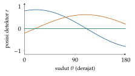

Bab 25
Melihat ke Dalam Tubuh
Kuliah deep learning for medical imaging dimulai bukan dengan jaringan saraf, melainkan dengan fisika. Naskah dasarnya membahas osilasi dan gelombang, analisis Fourier, gelombang elektromagnetik, fenomena gelombang seperti pembiasan, interferensi, hamburan, dan penyerapan, lalu cara menghasilkan gambar dengan sinar-X, tomografi komputer, dan kedokteran nuklir. Pilihannya masuk akal: kita tidak bisa menilai apa yang dilakukan sebuah jaringan pada citra CT tanpa memahami dari mana angka-angka di citra itu datang.
Citra medis berbeda dari foto biasa. Setiap piksel adalah hasil pengukuran fisik dengan satuan dan noise yang khas, gambar sering berbentuk volume tiga dimensi, data berlabel mahal karena butuh dokter ahli, dan kesalahan bisa berakibat fatal. Bab ini mengikuti jalan dari foton ke diagnosis.
Gelombang dan Fourier
Naskah kuliah membuka dengan osilator harmonik, sistem paling sederhana yang berosilasi. Massa \(m\) pada pegas dengan konstanta \(k\) merasakan gaya pemulih yang sebanding dengan simpangannya, sehingga hukum Newton memberi \(m\ddot x=-kx\). Solusinya \(x(t)=A\cos(\omega_0t+\varphi)\) dengan \(\omega_0=\sqrt{k/m}\): frekuensinya ditentukan sistem, sedangkan amplitudo dan fase ditentukan keadaan awal. Banyak sistem yang jauh lebih rumit, dari molekul yang bergetar sampai rangkaian listrik, berperilaku seperti osilator harmonik di sekitar titik setimbangnya, karena setiap potensial yang mulus tampak seperti parabola kalau dilihat cukup dekat. Kalau ada gesekan, osilasinya meluruh secara eksponensial. Gelombang adalah osilasi yang merambat: setiap titik berosilasi, dan fasenya bergeser sepanjang arah rambat.
Analisis Fourier menyatakan sinyal apa pun sebagai jumlah gelombang sinus dengan frekuensi berbeda. Alat ini akan muncul lagi di jantung tomografi, dan sudah kita temui di pengolahan sinyal (Bab 18). Dua sifatnya paling penting di sini. Konvolusi di ruang menjadi perkalian di frekuensi, sehingga penyaringan bisa dilakukan dengan mengalikan spektrum. Dan teorema sampling berlaku juga di pemindai: detektor yang jaraknya terlalu renggang tidak bisa menangkap detail halus, dan detail yang terlewat muncul kembali sebagai pola palsu yang disebut aliasing. Naskah kuliah mencatat bahwa syarat sampling yang ideal untuk detektor CT tidak bisa dipenuhi secara teknis, sehingga pembuat pemindai memakai trik seperti menggeser detektor seperempat lebarnya atau menggoyang titik fokus tabung sinar-X.
Cahaya, gelombang radio, dan sinar-X adalah gelombang elektromagnetik yang sama dengan panjang gelombang berbeda. Ketika melewati materi, gelombang bisa dibiaskan, dipantulkan, diinterferensikan, dihamburkan, atau diserap. Untuk hamburan oleh partikel yang jauh lebih kecil dari panjang gelombang, kekuatan hamburan naik dengan pangkat empat frekuensi, sehingga cahaya biru dihamburkan jauh lebih kuat dari cahaya merah. Naskah kuliah memakai contoh ini untuk menjelaskan mengapa langit biru dan senja merah, sebelum beralih ke foton berenergi jauh lebih tinggi.
Sinar-X dan penyerapan
Sinar-X dihasilkan dengan menembakkan elektron yang dipercepat tegangan tinggi ke sebuah anoda, biasanya dari tungsten. Elektron yang diperlambat mendadak di dalam anoda memancarkan Bremsstrahlung, spektrum kontinu yang dibatasi energi kinetik elektron, dan elektron yang menendang keluar elektron dalam atom anoda menghasilkan garis karakteristik yang tajam. Energi foton terbesar yang bisa muncul sama dengan energi kinetik elektron, \(E=h\nu=eU\), sehingga tabung dengan tegangan 100 kilovolt menghasilkan foton sampai 100 kiloelektronvolt.
Di dalam tubuh, foton berinteraksi dengan materi terutama dengan dua cara. Pada efek fotolistrik, foton diserap seluruhnya dan melepaskan sebuah elektron. Efek ini kuat untuk unsur dengan nomor atom tinggi, seperti kalsium di tulang atau iodium pada zat kontras, dan memberi kontras yang tajam. Pada hamburan Compton, foton menumbuk elektron yang terikat lemah, kehilangan sebagian energinya, dan berbelok arah. Foton terhambur ini tidak membawa informasi tentang di mana ia seharusnya mendarat, dan membuat gambar berkabut. Kolimator dan grid anti hamburan, yaitu lamel-lamel penyerap yang hanya meloloskan foton yang datang dari arah yang benar, menyaringnya sebelum mencapai detektor.
Penurunan intensitas di setiap irisan tipis sebanding dengan intensitas yang datang dan dengan ketebalan irisan, \(\,\mathrm{d}I=-\mu I\,\mathrm{d}s\), dengan \(\mu\) koefisien atenuasi jaringan. Memisahkan variabel, \(\,\mathrm{d}I/I=-\mu\,\mathrm{d}s\), lalu mengintegrasikan dari pintu masuk sampai pintu keluar memberi hukum Beer–Lambert, \[I=I_0\exp\Big(-\int\mu(s)\,\mathrm{d}s\Big).\] Untuk jaringan seragam dengan \(\mu=0{,}2\ \mathrm{cm}^{-1}\) setebal 10 cm, hanya \(e^{-2}\approx13{,}5\) persen foton yang tembus. Ketebalan yang menyerap tepat separuh foton, \(\ln2/\mu\), di sini sekitar \(3{,}5\) cm. Tulang menyerap jauh lebih kuat dari jaringan lunak, itulah sebabnya tulang tampak terang pada foto rontgen.
Setiap foton yang diserap menyimpan energi di jaringan, dan di situlah harga sebuah gambar. Dosis serap diukur dalam gray, satu joule per kilogram. Jenis radiasi berbeda merusak jaringan dengan efektivitas berbeda, sehingga dosis ekuivalen mengalikan dosis serap dengan faktor bobot radiasi: satu untuk foton, dua puluh untuk partikel alfa. Organ berbeda juga punya kepekaan berbeda, dan dosis efektif menjumlahkan dosis ekuivalen setiap organ dengan bobot kepekaannya. Hasilnya dinyatakan dalam sievert. Paparan alami di Eropa Tengah sekitar dua milisievert per tahun, dan setiap pemeriksaan dengan sinar-X menambahkan sesuatu ke angka itu, sehingga selalu ada tarik-menarik antara kualitas gambar dan dosis.
Tomografi komputer
Foto rontgen biasa menumpuk seluruh tubuh menjadi satu bayangan. Tomografi komputer mengukur banyak proyeksi dari berbagai sudut lalu merekonstruksi peta \(\mu\) di setiap titik irisan. Dari hukum Beer–Lambert, setiap pengukuran memberi integral garis koefisien atenuasi, \[p(\theta,r)=-\ln\frac{I}{I_0}=\int_{\text{garis}(\theta,r)}\mu(x,y)\,\mathrm{d}s,\] dengan \(\theta\) arah proyeksi dan \(r\) jarak garis dari pusat. Kumpulan semua integral garis disebut transformasi Radon. Masalah utama CT adalah membalik transformasi ini.
Data mentah biasanya disusun sebagai gambar dengan sudut di satu sumbu dan posisi detektor di sumbu lain. Sebuah titik kecil di \((x_0,y_0)\) hanya dilewati garis yang memenuhi \(r=x_0\cos\theta+y_0\sin\theta\). Untuk semua sudut, titik itu menggambar sebuah kurva sinus, dengan amplitudo sama dengan jaraknya dari pusat dan fase sesuai arahnya. Karena itu data mentah ini disebut sinogram (Gambar 25.1). Sebuah benda nyata adalah tumpukan banyak titik, dan sinogramnya adalah tumpukan banyak kurva sinus. Untuk menguji algoritme rekonstruksi, dipakai gambar uji standar seperti phantom Shepp–Logan, sekumpulan elips yang meniru penampang kepala.

Cara paling naif untuk membalik transformasi Radon adalah backprojection: setiap proyeksi “dioleskan” kembali sepanjang garisnya, lalu semua sudut dijumlahkan. Hasilnya kabur, karena setiap titik terang ikut menyebar ke seluruh garis yang melewatinya, dengan kekaburan yang meluruh seperti \(1/r\).
Obatnya datang dari teorema irisan pusat: transformasi Fourier satu dimensi dari proyeksi pada sudut \(\theta\) sama dengan nilai transformasi Fourier dua dimensi gambar, \(F\), di sepanjang garis melalui pusat dengan arah yang sama. Dari teorema ini, rekonstruksi bisa diturunkan dalam dua baris. Gambar adalah transformasi Fourier balik dari \(F\), \[\mu(x,y)=\iint F(u,v)\,e^{i2\pi(ux+vy)}\,\mathrm{d}u\,\mathrm{d}v .\] Sekarang ganti ke koordinat polar, \(u=k\cos\theta\) dan \(v=k\sin\theta\), dengan \(\theta\) dari 0 sampai \(\pi\) dan \(k\) dari minus sampai plus tak hingga. Elemen luasnya berubah menjadi \(\,\mathrm{d}u\,\mathrm{d}v=|k|\,\mathrm{d}k\,\mathrm{d}\theta\), persis seperti luas cincin tipis yang tumbuh dengan jari-jarinya. Menurut teorema irisan pusat, \(F(k\cos\theta,k\sin\theta)\) adalah transformasi Fourier proyeksi, \(P_\theta(k)\). Maka \[\mu(x,y)=\int_0^\pi\Big[\int_{-\infty}^{\infty}P_\theta(k)\,|k|\,e^{i2\pi kr}\,\mathrm{d}k\Big]_{r=x\cos\theta+y\sin\theta}\,\mathrm{d}\theta .\] Bagian dalam adalah proyeksi yang spektrumnya dikalikan \(|k|\), lalu dikembalikan ke ruang. Bagian luar adalah backprojection. Faktor \(|k|\) yang muncul dari perubahan koordinat itulah filter ramp, filter lolos tinggi yang mengoreksi frekuensi rendah yang terwakili berlebihan. Inilah filtered backprojection (Kak dan Slaney 1988), algoritme yang bekerja di dalam hampir semua pemindai CT sejak pemindai pertama yang dibangun Hounsfield (Hounsfield 1973). Dalam praktik, filter ramp yang murni memperkuat noise frekuensi tinggi, sehingga ujungnya dilandaikan. Memilih bentuk filter adalah tawar-menawar antara ketajaman tepi dan kehalusan gambar.
Nilai yang ditampilkan bukan \(\mu\) langsung, melainkan satuan Hounsfield, \(\mathrm{HU}=1000\,(\mu-\mu_{\mathrm{air}})/\mu_{\mathrm{air}}\), dengan \(\mu_{\mathrm{air}}\) koefisien atenuasi air. Air bernilai 0 dan udara sekitar \(-1000\), sedangkan tulang padat bisa beberapa ratus sampai lebih dari seribu. Rentang ini jauh lebih lebar dari yang bisa dibedakan mata pada layar, sehingga dokter memakai jendela: hanya rentang tertentu yang dipetakan ke skala abu-abu, dan nilai di luarnya menjadi hitam atau putih. Jendela otak, misalnya, memetakan sekitar 0 sampai 80 HU ke seluruh skala abu-abu, sehingga perbedaan halus antara materi abu-abu dan materi putih terlihat jelas. Jendela paru jauh lebih lebar dan berpusat pada nilai negatif. Skala yang dibakukan ini membuat citra dari pemindai berbeda bisa dibandingkan, dan menjadi alasan mengapa normalisasi intensitas untuk jaringan saraf pada CT berbeda dari normalisasi pada foto biasa: memotong ke jendela yang relevan sering lebih berguna daripada standardisasi buta.
Ada beberapa artefak yang khas. Benda logam seperti tambalan gigi menyerap hampir semua foton dan merusak asumsi rekonstruksi, sehingga muncul garis-garis terang dan gelap. Foton berenergi rendah lebih mudah terserap, sehingga berkas menjadi “lebih keras” saat menembus tubuh, dan bagian tengah benda seragam tampak lebih gelap dari tepinya. Pasien yang bergerak selama pemindaian membuat proyeksi-proyeksi tidak konsisten satu sama lain.
Kedokteran nuklir
Pada skintigrafi, SPECT, dan PET, sumber radiasinya ada di dalam tubuh. Pasien diberi zat penanda radioaktif yang terkumpul di jaringan dengan aktivitas tertentu, misalnya tulang yang sedang memperbaiki diri atau sel tumor yang memakan banyak glukosa. Gambarnya menunjukkan fungsi, bukan anatomi.
Penanda yang paling penting untuk skintigrafi adalah teknesium-99m, yang memancarkan sinar gamma 140 kiloelektronvolt dan bisa dilekatkan ke banyak biomolekul. Waktu paruhnya enam jam. Peluruhan radioaktif mengikuti \(N(t)=N_0\,2^{-t/T_{1/2}}\), sehingga setelah satu hari, empat waktu paruh, tinggal \(2^{-4}\) atau sekitar enam persen aktivitas awal. Waktu paruh ini cukup panjang untuk menyiapkan dan menjalankan pemeriksaan, dan cukup pendek agar pasien tidak lama terpapar. Kamera gamma memakai kolimator, pelat timbal dengan lubang-lubang panjang yang hanya meloloskan sinar dari satu arah, karena sinar gamma tidak bisa difokuskan dengan lensa. Kolimator membuang sebagian besar foton, sehingga gambar kedokteran nuklir selalu berisik. SPECT memutar kamera di sekitar pasien dan merekonstruksi irisan dengan cara yang sama seperti CT.
Pada PET, positron yang dipancarkan bertemu elektron dan musnah menjadi dua foton 511 kiloelektronvolt yang terbang ke arah berlawanan. Detektor yang menangkap kedua foton pada saat yang hampir bersamaan tahu bahwa peristiwanya terjadi di sepanjang garis penghubung keduanya, tanpa perlu kolimator. Rekonstruksinya kembali menjadi masalah tomografi. Karena gambar PET menunjukkan fungsi tetapi hanya sedikit anatomi, ia sering digabung dengan CT dalam satu pemindai.
Deep learning untuk citra medis
Tugas-tugas utama di citra medis sama dengan di Bab 11: klasifikasi, deteksi, dan segmentasi, dengan rekonstruksi sebagai tugas tambahan yang khas. Klasifikasi lesi kulit dengan jaringan konvolusi yang dilatih pada lebih dari seratus ribu gambar mencapai kinerja setara dokter kulit dalam percobaan Esteva dkk. (2017). Untuk segmentasi organ dan tumor, U-Net (Ronneberger, Fischer, dan Brox 2015) yang awalnya dirancang untuk citra biomedis menjadi standar. Jalur turun mengecilkan gambar dan menangkap konteks, jalur naik mengembalikan resolusinya, dan sambungan lompat dari setiap tingkat jalur turun ke tingkat yang sama di jalur naik membawa detail halus yang hilang saat gambar dikecilkan. Untuk volume tiga dimensi, semua konvolusi menjadi tiga dimensi, dan memori GPU menjadi batas, sehingga volume sering dipotong menjadi balok-balok kecil. nnU-Net (Isensee dkk. 2021) menunjukkan bahwa sebagian besar keberhasilan datang dari menyetel resep dengan benar untuk setiap himpunan data, yaitu resolusi, normalisasi, augmentasi, dan arsitektur, dan bahwa resep itu bisa dibuat otomatis dari sifat-sifat datanya.
Data berlabel di bidang ini mahal, sehingga dua teknik dari bab-bab sebelumnya selalu dipakai. Augmentasi menambah variasi dengan memutar, mencerminkan, dan merenggangkan gambar secara elastis, serta mengubah kontras sedikit. Tetapi augmentasi harus masuk akal secara anatomi: membalik kiri dan kanan bisa mengubah makna sebuah temuan jantung. Transfer learning memulai dari jaringan yang sudah dilatih pada data besar. Model fondasi yang dilatih tanpa label pada jutaan citra medis semakin sering menjadi titik awal ini.
Segmentasi dinilai dengan koefisien Dice, \(2|A\cap B|/(|A|+|B|)\), ukuran tumpang tindih antara daerah tebakan \(A\) dan daerah yang benar \(B\). Dice berkerabat dekat dengan Tanimoto di Bab 23: kalau Tanimoto \(T=|A\cap B|/|A\cup B|\), maka Dice \(=2T/(1+T)\), karena \(|A|+|B|=|A\cup B|+|A\cap B|\). Tumor yang kecil membuat Dice peka sekali. Untuk tumor berukuran 100 voxel, tebakan yang bergeser sehingga hanya 80 voxel yang tumpang tindih, dengan ukuran tebakan tetap 100, memberi Dice \(160/200=0{,}8\). Pergeseran yang sama pada organ berukuran 10 000 voxel nyaris tidak terasa. Karena itu Dice juga dipakai langsung sebagai loss dalam bentuk lunak, dengan probabilitas sebagai pengganti keanggotaan biner, sehingga kelas kecil tidak tenggelam di bawah latar belakang yang luas, masalah ketidakseimbangan kelas yang sama dengan di Bab 1.
Rekonstruksi juga mulai dibantu jaringan saraf. CT dosis rendah memakai lebih sedikit foton sehingga lebih aman, tetapi gambarnya lebih berisik. Jaringan bisa membersihkan noise setelah rekonstruksi, atau algoritme rekonstruksi iteratif bisa dibuka menjadi lapisan-lapisan yang dipelajari, seperti yang disinggung di Bab 18. Pendekatan yang paling hati-hati menjaga operator fisikanya, yaitu transformasi Radon, di dalam jaringan, sehingga hasilnya tetap konsisten dengan data yang diukur. Di semua penerapan ini, pengetahuan fisika tentang bagaimana citra terbentuk tetap menjadi pegangan untuk memeriksa apakah sebuah hasil masuk akal. Jaringan yang “membersihkan” gambar terlalu agresif bisa menghapus lesi kecil, atau lebih buruk, menggambar struktur yang tampak meyakinkan tetapi tidak ada.
Batas dan tanggung jawab
Kuliah AI dalam ilmu hayati dan kuliah tentang AI dan masyarakat sama-sama menyoroti batas sistem seperti ini. Model bisa belajar jalan pintas, misalnya penanda di sudut gambar yang hanya muncul pada pasien dari rumah sakit tertentu. Model yang dilatih di satu rumah sakit bisa jatuh kinerjanya di rumah sakit lain dengan pemindai berbeda. Dan model bisa bekerja lebih buruk untuk kelompok pasien yang kurang terwakili dalam data latih. Alat-alat XAI di Bab 17 membantu menemukan masalah seperti ini, dan regulasi di Bab 35 menetapkan kewajiban bagi sistem AI berisiko tinggi, termasuk alat diagnosis.
Perkembangan riset
Citra medis juga mendapat model fondasinya sendiri. RETFound (Zhou dkk. 2023) dilatih secara self-supervised pada 1,6 juta citra retina tanpa label, lalu disetel untuk mendeteksi penyakit mata dengan sedikit data berlabel. Yang lebih mengejutkan, model ini juga dipakai untuk meramal penyakit sistemik seperti gagal jantung dan serangan jantung dari citra retina. MedSAM (Ma dkk. 2024) menyesuaikan Segment Anything untuk citra medis dengan lebih dari 1,5 juta pasangan citra dan topeng dari sepuluh modalitas, dan dievaluasi pada 86 tugas validasi internal serta 60 tugas eksternal.
Untuk teks medis, Med-PaLM (Singhal dkk. 2023) mengevaluasi model bahasa besar pada soal-soal ujian kedokteran dan pertanyaan kesehatan sehari-hari. Akurasi pada soal pilihan ganda gaya ujian lisensi dokter Amerika mencapai 67,6 persen untuk Flan-PaLM, lebih dari 17 poin di atas rekor sebelumnya. Tetapi evaluasi oleh dokter memperlihatkan celah penting dalam ketepatan fakta, penalaran, dan potensi bahaya, dan versi yang disetel, Med-PaLM, masih kalah dari klinisi. Makalah ini menjadi contoh baik mengapa angka benchmark tidak cukup di bidang medis, sejalan dengan bagian batas dan tanggung jawab di atas.
Catatan sumber.
Bab ini mengikuti naskah dasar Deep Learning for Medical Imaging (osilasi dan gelombang, analisis Fourier, gelombang elektromagnetik, pencitraan sinar-X dan dosimetri, tomografi komputer, kedokteran nuklir). Untuk rekonstruksi tomografi, Kak dan Slaney (1988) adalah rujukan klasik.